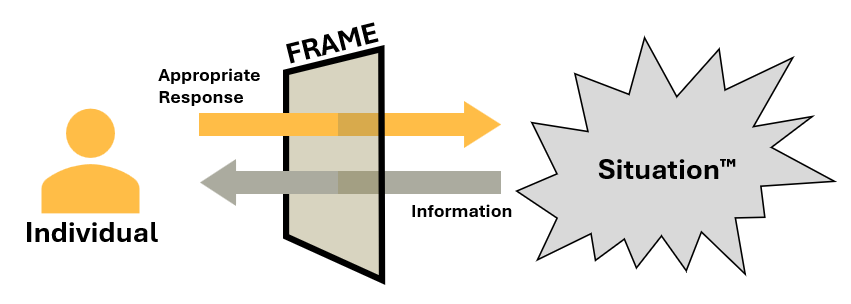
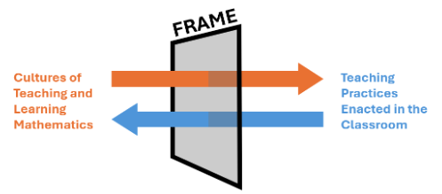

No, not the kind that holds pictures or paintings in place, though, we will see how that imagery helps understand this concept.
First of all, I want to preface this essay with why I want to talk about frames. Frames form the basis of my education research trajectory and informs how I approach my own teaching. Many in the business of education research call this a theoretical or conceptual framework, and certainly at some point I do want to take a Johan Stab at explaining what a theoretical framework is. But, for now, I want to draw you into my world and give you a glimpse into how I approach the research I did for my dissertation and the future research I aim to do.
Imagine this: you walk into a classroom, there are 25 students with varying levels of excitement and facial expressions, you're holding the lesson plan for the day and yesterday and the next day's. There are about 1000 different other possible points of interest that have just bombarded your brain. Evidently, you aren't going crazy (at least not that I can say). So, how do you make sense of any of it? How do you know which of the 1000 to pay attention to? How do you act and respond accordingly?
Frames are precisely that thing that helps you answer those questions. Sociologist Erving Goffman (1986) coined the terms frame and frame analysis to uncover exactly how socially constructed we answer the question "what is it that's going on here?" when we enter a room. And here I am now in 2025, using this idea to understand how do instructors make sense of their classroom's chaotic vibes.
The way I visualize frames is a kind of filter that... for a lack of a better word... filters the information coming towards us (see the image below this paragraph). It allows us to ignore that Student X is wearing a black shirt today instead of a blue one a month ago. At the same time, it allows us to notice that Student Y looks confused after you said, "the derivative of pi is zero."

So why not just call them filters? Honestly... take that up with Erving Goffman! But, I can give you my take on it. A filter gives an air of passiveness to it, that the 1000 points of information is just filtered through and we just absorb the important bits. However, an important aspect to Goffman's frame analysis is understanding how it is people respond to situations. There is a strong sense of action in understanding frames, the road goes both ways: we understand the given situation in one way and we respond with an action we understood as being appropriate.
But wait... isn't what you're describing just someone's beliefs about teaching and learning? You are asking great questions! Fortunately, I do have a satisfying distinguishing answer coming from my dissertation:
[A]s Stipek et al. (2000) and Fang (1996) discussed, beliefs are desires for how instructors want to teach or how they want their students to learn. On the other hand, I take frames to be cultural/cognitive constructs that support instructor’s actions in a given situation. In short, I take the stance that beliefs are desires about teaching and learning while frames are what actually get enacted in class. Let us explore this subtlety through a hypothetical example. Consider an instructor who holds the belief that learning occurs when students are given ample time in class to synthesize new concepts with existing understanding. And so, when situations allow this instructor to provide ample, their frames and beliefs are aligned – that is, their understanding of what actions they must perform aligned with what they want to perform. However, if the curriculum structure prevents ample time in class for synthesis (perhaps due to expectations of going through material on a strict schedule), then this instructors’ frames and beliefs are misaligned – the instructor may be pressured to yield their desire to provide ample time and thus, enact practices which lessen opportunities for synthesis. In this example, due to logistical constraints, the instructor may understand their role in opposition to their desired role. (Cristobal, 2025, pp. 17-18)
(Side note: Oh how exciting that I get to quote myself!) Okay, back to the essay, beliefs and frames are related but there is a subtle difference here!
Okay... so we know what frames are and how they are present in how we respond and act in a given situation. But what about them is so interesting? Well, for one, I could ask the question: how does Instructor Z know to filter in Student Y's disgruntled face while Instructor A filters out the same information? That is precisely what got me hooked into this research for my dissertation. I wanted to know what cultural and social factors are shaping each instructor's frames.
This is the point in the essay where I thought I wanted to talk about the findings of my doctoral research... but I think that detracts from the focus that I wanted to have: a description of what frames are with the goal of having people understand what is it that I was looking at. So, I'll save those research results for another monthly math-y!
But! I can at least give you a teaser. Here are the aspects of frames that I found relevant to the construction of frames of teaching through my research with new mathematics graduate student instructors: (1) our role in the classroom as instructors, (2) professional knowledge relevant to the act of teaching, and (3) interactions in the classroom which are useful to fulfill the role of instructor.
My philosophy is that in order for mathematics to change its status of being a gatekeeper from achieving academic success, mathematics communities need to develop or adopt cultures which actively transform the experience of doing mathematics into gateways. Through this philosophy, I was motivated to know why cultures of mathematical exclusion persist, particularly in post-secondary teaching and learning. In order to understand the influence that culture has on teaching and learning mathematics, I use frames---mental constructs which allow individuals to understand and respond to a given situation (Goffman, 1986).
I center narratives of mathematics instructors and students and use frames as a proxy to understand how these narratives are shaped and what reframing can be done to better future experiences. In my dissertation, I used frames and narratives as avenues to understand how new mathematics graduate student instructors learned what it means to teach and how the culture they are entrenched in shaped this development.

Through this filter analogy, we can understand how the cultures of teaching and learning mathematics inform how professors notice and remedy equity issues within their department. Moving forward, I want to expand to understand how students in mathematics courses frame their learning and their instructor’s teaching; consequently, how these frames shape students’ learning practices. There's so much I want to delve into just by switching focus on students! But this essay has gone on long enough!
Okay, but one more thing... there is this idea of misalignment and misaligned frames that I did not even get to! I have this hypothesis that misalignment between instructors’ and students’ frames of learning mathematics is a large contributor to the difficulties students face in learning.
All in all, I believe that frames research can push the horizons of what kinds of inclusive frames instructors and students can adopt. Thank you for reading!
I'm in the kitchen cooking!
Cristobal, J. B. (2025). "Culture and Context: How Frames of Teaching and of Learning Mathematics Form and Change for Graduate Student Instructors" (2025). Dissertations and Doctoral Documents from University of Nebraska-Lincoln, 2023–. 273. https://digitalcommons.unl.edu/dissunl/273
Fang, Z. (1996). A review of research on teacher beliefs and practices. Education Research, 38(1), 47-65.
Goffman, E. (1986). Frame Analysis: An Essay on the Organization of Experience. Boston, MA: Northeastern University Press.
Stipek, D. J., Givvin, K. B., Salmon, J. M., & MacGyvers, V. L. (2001). Teachers’ beliefs and practices related to mathematics instruction. Teaching and Teacher Education, 17, 213-226.
Uploaded 2025 May 17. This is a part of a monthly project which you can read about here.